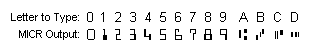
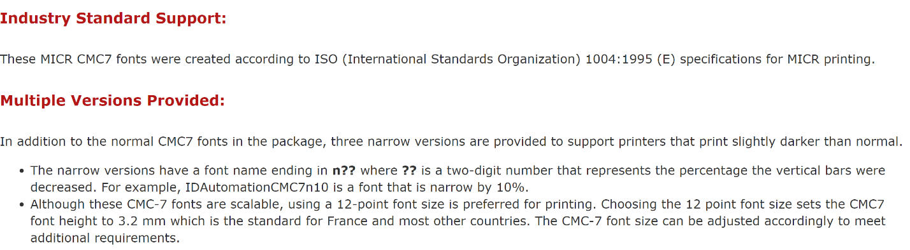
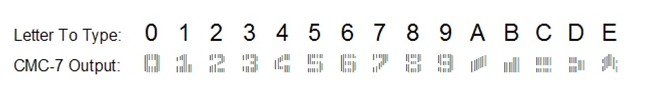

Ein Prüflayout auswählen
Sie können Ihre Schecks entwerfen, um sie den Vorgaben anzupassen, die von den lokalen Behörden festgelegt werden. Scheckbilder können in Englisch, Französisch oder Spanisch gedruckt werden.
Schecks können sowohl im USA- als auch im Kanada-Schecklayout, entweder im Scheck/Formular/Scheck-Format oder im Formular/Formular/Scheck-Format gedruckt werden.
Ein Prüflayout auswählen
- Wählen Sie die
 Symbol. Geben Sie Berichtsauswahl – Bankkonto ein, und wählen Sie dann den zugehörigen Link.
Symbol. Geben Sie Berichtsauswahl – Bankkonto ein, und wählen Sie dann den zugehörigen Link. - Auf der Seite Berichts-Auswahl - Bankkonto unter Verwendung wählen Sie Scheck.
- Wählen Sie eine der folgenden Berichts-IDs:
| Berichts-ID | Berichtsname | Beschreibung |
|---|---|---|
| 1401 | Aktivieren | Dieser Bericht wird standardmäßig verwendet. |
| 10411 | Scheck (Formular/Formular/Scheck) | Dieser Bericht dient dazu, Schecks im Formular/Formular/Scheck-Format zu drucken. |
| 10412 | Scheck (Formular/Scheck/Formular) | Dieser Bericht dient dazu, Schecks im Formular/Scheck/Formular-Format zu drucken. |
| 10413 | Drei Schecks pro Seite | Dieser Bericht ist dafür ausgelegt, drei Schecks auf jeder Seite zu drucken. |
Wenn Sie Schecklayouts eingerichtet haben, können Sie Schecks auf de Seite Zahlung Buch.-Blatt drucken. Weitere Informationen finden Sie unter Arbeiten mit Schecks.
Verwenden Sie dazu entweder die Word- oder die RDLC-Integration, um eines dieser Standardprüflayouts zu ändern. Weitere Informationen finden Sie unter Erstellen und Ändern benutzerdefinierter Berichtslayouts.
Verwenden von MICR- und Sicherheitsschriftarten
Die Onlineversion von Business Central enthält vorinstallierte Schriftarten auf den Servern, die beim Definieren von Prüflayouts verwendet werden können. Im Folgenden wird erläutert, welche Schriftarten verfügbar sind, und es werden Links zu detaillierten Informationen der Drittanbieter der Schriftarten angezeigt.
Wichtig
MICR- und Schecksicherheits-Schriftarten in Microsoft Dynamics Business Central sind in einem Schriftartpaket von IDAutomation.com, Inc. lizenziert. Diese Produkte dürfen nur als Teil von und in Verbindung mit Microsoft Dynamics Business Central verwendet werden.
In Update 15.3 und höher sind MICR-Schriftarten (Magnetic Ink Character Recognition) installiert und können verwendet werden. Es werden sowohl der E-13B- als auch der CMC-7-Standard unterstützt. Zusätzlich zu MICR-Schriftarten stehen spezielle Sicherheitsschriftarten zur Verfügung, mit denen Text, Namen, Beträge und die Währungssymbole Dollar, Euro, Pfund und Yen generiert werden können, die nach dem Drucken eines Schecks nur schwer zu manipulieren sind.
Hinweis
Aus Sicherheits- und rechtlichen Gründen können Sie keine benutzerdefinierten Schriftarten in die Business Central-Umgebung hochladen.
MICR E-13B-Spezifikationen
Im Folgenden werden die Spezifikationen für die MICR E-13B-Schriftarten zusammengefasst, die beim Kalibrieren von Schriftarten für Schecklayouts mit bestimmten MICR-Druckern hilfreich sein können.
Trennzeichen

Die vollständige Spezifikation der MICR E-13B-Schriftarten finden Sie in der Dokumentation des Lieferanten auf dieser Website: (https://www.idautomation.com/micr-fonts/e13b/).
MICR CMC-7-Spezifikationen
Die folgenden CMC-7-Schriftarten sind in Business Central online verfügbar:
- IDAutomationCMC7
- IDAutomationCMC7n10
- IDAutomationCMC7n25
- IDAutomationCMC7n40
Im Folgenden werden die Spezifikationen für die MICR CMC-7-Schriftarten zusammengefasst, die beim Kalibrieren von Schriftarten für Schecklayouts mit bestimmten MICR-Druckern hilfreich sein können.

Trennzeichen

Die vollständige Spezifikation der MICR CMC-7-Schriftarten finden Sie in der Dokumentation des Lieferanten auf dieser Website: (http://www.idautomation.com/micr-fonts/cmc7/).
Spezifikationen für sichere Schriftarten
Im Folgenden werden die Spezifikationen für die Schecksicherheits-Schriftarten zusammengefasst, die beim Kalibrieren von Schriftarten für Schecklayouts mit bestimmten MICR-Druckern hilfreich sein können.

Die vollständige Spezifikation der Schecksicherheits-Schriftarten finden Sie in der Dokumentation des Lieferanten auf dieser Website: (https://www.idautomation.com/security-fonts/).
Schriftarten für andere Zwecke sind auch in Business Central verfügbar. Weitere Informationen finden Sie unter Verfügbare Schriftarten
Siehe auch
Erstellen und Ändern benutzerdefinierter Berichtslayouts
Schriftarten in Business Central
Verwalten von Verbindlichkeiten
Abstimmen von Bankkonten
Abschließen von Periodenabschlüssen
Arbeiten mit Business Central
Allgemeine Geschäftsfunktionen
Kostenlose E-Learning-Module für Business Central finden Sie hier